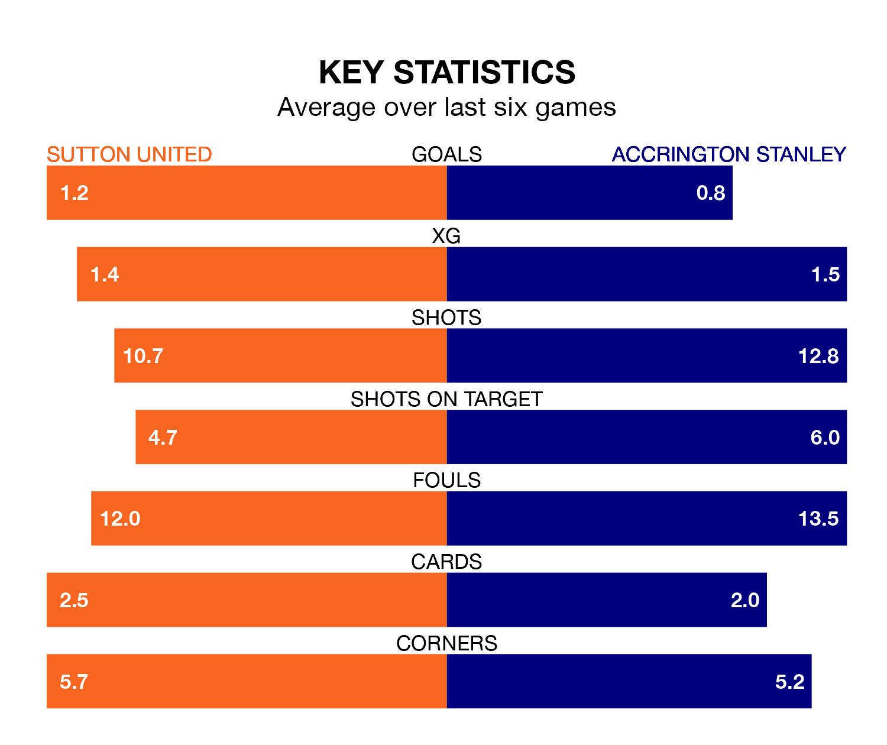

Struggling Sutton United face Accrington Stanley at the VBS Community Stadium on Saturday looking to build on a win in their last league outing.
After securing all three points with a 1-0 victory over Forest Green Rovers on March 16, the Us sit bottom of EFL League Two.
They travel to play an Accrington side 16th in the standings, who were held in their last match, 2-2 against Notts County.
Sutton are in mixed form in EFL League Two, with two wins and two draws from their last six games.
With a win and a draw over that period, Accrington's form is worse – they have taken four points from 18, compared to United's eight.
With 42 goals in 39 games so far this season, the Us are the league's third-lowest scorers with 1.1 goals per game. And they are conceding more than average, letting in 70 goals at a rate of 1.8 per game.
Stanley are also below average scorers, with 1.3 goals per game, compared to a league average of 1.5. They have conceded 1.4 goals per game.
Saturday's match will be refereed by Tom Nield, who has taken charge of three EFL League Two games so far this season, issuing no red cards and booking eight players. He has not awarded any penalties.
He is yet to oversee a match featuring either Sutton or Accrington this season.
Updated: 10:19 (UTC), 22/03/24